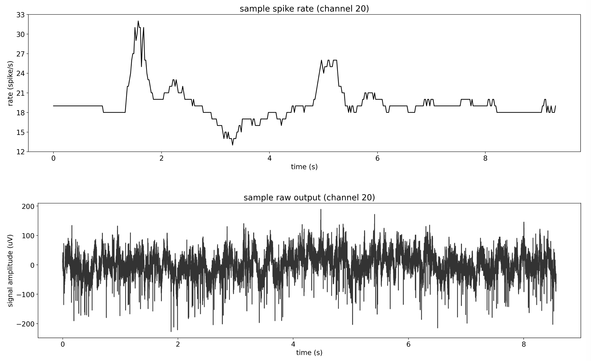

Architecture
The core NDS package is composed of 2 main components, the encoder and the electrophysiology (ephys) generator. The system takes behavioral data as input and outputs simulated electrophysiological data.
Behavioral data (measured or simulated) is passed to the encoder component, where the signal is preprocessed and an encoder model is used to produce spike rates. The spike rates are fed to the electrophysiology generator, that simulates realistic measurements of spiking data at high sample rates. The diagram below illustrates this system.
{kind=link}
NDS uses Lab Streaming Layer for input behavior data, internal modules communication, and electrophysiology data output. Additionally, we provide for the ability to record to, and play back from, data files. The images below illustrates example single channel output from each of the two main components. The first figure illustrates the generated spike rates from the behavioral data. And the second figure illustrates the simulated electrophysiology measurement at 30kHz.

The main way to use NDS is through the scripts that are added to path when NDS is installed, namely the encoder and ephys_generator scripts (see Running NDS). The behavior of these scripts (and many aspects of NDS itself) is configured using a settings file (see Configuring NDS).
All parts that compose the encoder (i.e. preprocessor, encoder model, and postprocessor) can be customized using plugins as described in encoder to fit the user’s needs.